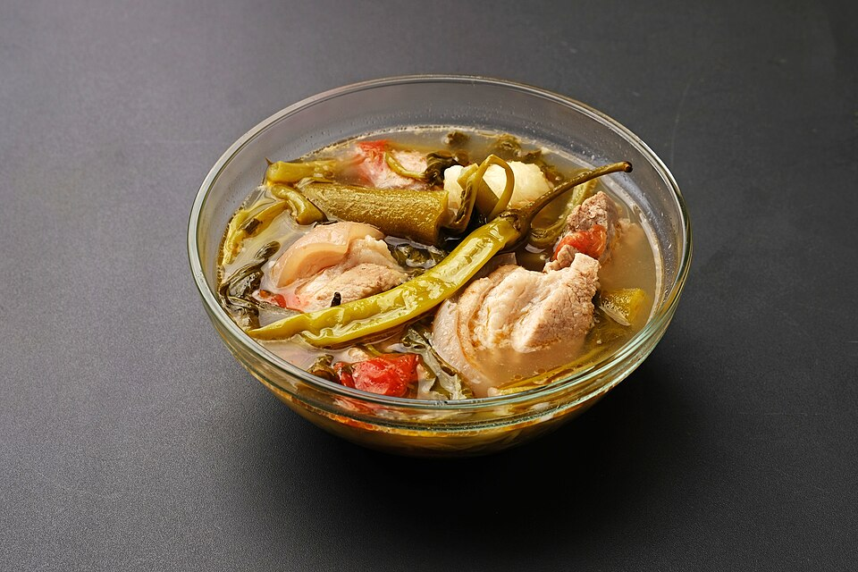

Sinigang na Baboy
Back to Homepage

Description
Sinigang is a sour and savory Filipino soup made with tamarind. This version uses pork ribs and fresh vegetables. It's the perfect comfort food on a rainy day.
Ingredients
- 1 kg pork ribs, cut into pieces
- 2 liters water
- 1 onion, quartered
- 2 tomatoes, quartered
- 1 pack tamarind soup mix (about 40 grams)
- 1 medium radish, sliced
- 1 bunch string beans, cut into 2-inch pieces
- 2 eggplants, sliced
- 2 long green chilies
- 1 bunch water spinach (kangkong)
- Fish sauce, to taste
Steps
- Boil the pork ribs with the onion and tomatoes in a large pot of water.
- Skim off the scum that rises to the surface, then simmer for 45 to 60 minutes until the pork is tender.
- Stir in the tamarind soup mix.
- Add the radish and cook for 5 minutes.
- Add the string beans, eggplants, and green chilies. Cook for another 5 minutes.
- Season with fish sauce to taste.
- Add the water spinach, then turn off the heat and cover the pot for 2 minutes.
- Serve hot with steamed rice.